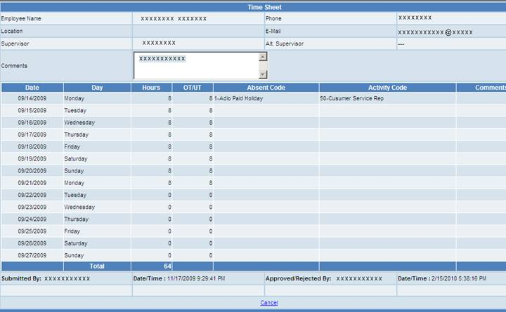

Verify Timesheets
Verify Timesheets option will enable
designated supervisor to approve his/her employee timesheets. This option
will provide you a list of all pending timesheets for approval in the
descending order in which they were submitted. To verify click on the name of
the employee to open the timesheet, that enables to review with options to
“Approve” or “Reject”. Approver can write any specific comments/notes
with the timesheet. By default the report shows All (Approved, Submitted,
Rejected) Timesheets.

Search
option is provided to track the record based on the employee name, trace
recording based on the status (Approved, Submitted, Rejected). Search can be
done based on PP Start Date and PP End Date.
Click on Employee Name to view the Time Sheet details.

Employee
Timesheet displays his/her working hours on a two weeks based status along with
activity Codes and Absent Codes if any. Comments can be added to the timesheet.
Employee timesheet also provides the details like his/her supervisors and
his/her contact details and report submission date-time.
Cancel button will redirect
back to the Timesheet Report Screen.